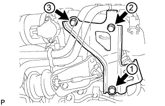
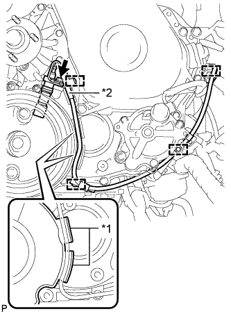

БЛОК ДВИГАТЕЛЯ (для моделей с DPF) > УСТАНОВКА |
| 1. УСТАНОВИТЕ КРОНШТЕЙН ПЕРЕДНЕЙ ОПОРЫ ДВИГАТЕЛЯ № 1 |
Закрепите 2 кронштейна опоры двигателя 8 болтами.
| 2. УСТАНОВИТЕ КРЫШКУ МАСЛЯНОГО ПОДДОНА № 1 В СБОРЕ |
Закрепите крышку масляного поддона № 1 4 болтами.
| 3. УСТАНОВИТЕ ВАКУУМНУЮ ТРУБКУ № 1 В СБОРЕ |
Закрепите вакуумную трубку № 1 болтом и гайкой.
| 4. УСТАНОВИТЕ КРЫШКУ МАСЛЯНОГО РАДИАТОРА В СБОРЕ |
Закрепите крышку масляного радиатора 13 болтами.
| 5. УСТАНОВИТЕ ВАКУУМНУЮ ТРУБКУ № 2 В СБОРЕ |
Закрепите вакуумную трубку № 2 2 гайками.
Подсоедините вакуумный шланг.
| 6. УСТАНОВИТЕ ВЫПУСКНОЙ ПАТРУБОК ОХЛАЖДАЮЩЕЙ ЖИДКОСТИ |
Закрепите новую прокладку и выпускной патрубок охлаждающей жидкости 2 болтами.
| 7. УСТАНОВИТЕ ШКИВ ПРИВОДНОГО ВАЛА НАСОСА |
Убедитесь, что шестерня насоса высокого давления в картере газораспределительного механизма плавно перемещается назад и вперед.
Закрепите шкив приводного вала насоса и фланец зубчатого колеса распредвала № 2 4 болтами.
 |
Переместите шкив приводного вала насоса назад и вперед, чтобы проверить осевой зазор приводного вала насоса высокого давления.
| 8. УСТАНОВИТЕ ЭЛЕМЕНТ ЗАЩИТЫ ТОПЛИВНОГО НАСОСА ВЫСОКОГО ДАВЛЕНИЯ № 1 |
Установите элемент защиты № 1 топливного насоса высокого давления и закрепите его 2 болтами.
| 9. УСТАНОВИТЕ ИЗОЛЯТОР ТОПЛИВНОГО НАСОСА ВЫСОКОГО ДАВЛЕНИЯ |
 |
Установите изолятор топливного насоса высокого давления.
 | Передняя сторона автомобиля |
| 10. УСТАНОВИТЕ ИЗОЛЯТОР ВПУСКНОГО КОЛЛЕКТОРА № 2 |
Установите изолятор впускного коллектора № 2
| 11. УСТАНОВИТЕ ТОПЛИВНУЮ СИСТЕМУ COMMON RAIL В СБОРЕ |
Закрепите топливную систему Common Rail 2 болтами.
Подсоедините разъем клапана сброса давления.
| 12. УСТАНОВИТЕ МАСЛЯНЫЙ ФИЛЬТР В СБОРЕ |
Проверьте и очистите установочную поверхность масляного фильтра.
Нанесите чистое моторное масло на прокладку нового масляного фильтра.
Навинтите маслянный фильтр на место вручную. Затяните его так,чтобы уплотнение прилегало к посадочной поверхности.
 |
Затяните масляный фильтр с помощью SST. В зависимости от места проведения работ выберите следующее.
Если есть достаточно места, затяните масляный фильтр с помощью динамометрического ключа.
Если для использования динамометрического ключа недостаточно места, затяните масляный фильтр на 3/4 оборота вручную или обычным ключом.
| 13. УСТАНОВИТЕ СВЕЧУ НАКАЛИВАНИЯ В СБОРЕ |
Очистите отверстие для свечи накаливания.
Обмотайте сверло диаметром 4,4 мм (0,173 дюйма) защитной лентой на расстоянии 118,5 мм (4,665 дюйма) от конца.
Вставьте сверло 118,5 мм (4,665 дюйма) в отверстие для свечи накаливания (до ленты) и удалите весь нагар, поворачивая сверло рукой.
Вставьте сверло диаметром 4 мм (0,157 дюйма) в отверстие для свечи накаливания и удалите весь нагар в конце отверстия для свечи накаливания, поворачивая сверло рукой.
С помощью удлиненной торцевой головки на 12 мм установите свечу накаливания в сборе.
| 14. УСТАНОВИТЕ ИЗОЛЯТОР ВПУСКНОГО КОЛЛЕКТОРА № 1 |
Установите изолятор впускного коллектора № 1
| 15. УСТАНОВИТЕ РАЗЪЕМ СВЕЧИ НАКАЛИВАНИЯ № 1 |
Предварительно установите разъем свечи накаливания № 1, закрепив его 4 гайками.
Затяните 4 гайки.
Установите 4 уплотнительные шайбы винта.
Подсоедините разъем свечи накаливания № 1 к жгуту проводов.
| 16. УСТАНОВИТЕ ВПУСКНОЙ КОЛЛЕКТОР |
Временно закрепите новую прокладку и впускной коллектор 2 гайками и 4 болтами.
Затяните 2 гайки и 4 болта в порядке, показанном на рисунке.
Присоедините зажим разъема жгута проводов датчика к впускному коллектору.
| 17. УСТАНОВИТЕ ТЕПЛОЗАЩИТНЫЙ ЭКРАН ВПУСКНОГО КОЛЛЕКТОРА |
Установите теплозащитный экран впускного коллектора.
| 18. УСТАНОВИТЕ ОПОРУ ВПУСКНОГО ПАТРУБКА |
Закрепите опору впускного трубопровода болтом.
| 19. УСТАНОВИТЕ КОМПЛЕКТ ЭЛЕКТРОВАКУУМНОГО КЛАПАНА |
Установите комплект электровакуумного клапана и закрепите его 2 болтами.
Подсоедините 3 вакуумных шланга и 2 разъема электровакуумного клапана.
| *1 | Метка, нанесенная белой краской |
| *2 | Метка, нанесенная зеленой краской |
| *3 | Привод клапана регулирования всасывания |
| 20. УСТАНОВИТЕ ТРУБОПРОВОД ОБРАТНОГО СЛИВА ТОПЛИВА № 2 |
 |
Временно закрепите трубопровод обратного слива топлива № 2 3 болтами.
 | Пустотелый соединительный болт-штуцер |
Временно установите новую прокладку и пустотелый соединительный болт-штуцер.
Затяните 3 болта и пустотелый соединительный болт-штуцер.
| 21. УСТАНОВИТЕ ТРУБОПРОВОД ОБРАТНОГО СЛИВА ТОПЛИВА № 3 |
Нанесите на кольцевое уплотнение обратного топливного клапана тонкий слой топлива.
| *1 | Кольцевое уплотнение |
 |
Временно закрепите трубопровод обратного слива топлива № 3 2 болтами.
| *1 | Прокладка |
| Топливный обратный клапан |
Временно установите новую прокладку и обратный топливный клапан.
Затяните 2 болта и закрепите обратный топливный клапан.
Подсоедините 2 топливных шланга.
| 22. УСТАНОВИТЕ ТОПЛИВОПРОВОД № 2 |
 |
Нанесите на кольцевое уплотнение обратного топливного клапана тонкий слой топлива.
| *1 | Кольцевое уплотнение |
 |
Временно закрепите топливопровод № 2 с новой прокладкой с помощью пустотелого соединительного болта-штуцера.
| *1 | Прокладка |
| Пустотелый соединительный болт-штуцер |
| Топливный обратный клапан |
Временно установите новую прокладку и обратный топливный клапан.
С помощью шестигранного ключа на 6 мм затяните пустотелый соединительный болт-штуцер.
Затяните обратный топливный клапан.
| 23. УСТАНОВИТЕ ТОПЛИВНУЮ ТРУБКУ ВЫСОКОГО ДАВЛЕНИЯ № 4 |
Временно закрепите топливную трубку высокого давления № 4 гайками штуцеров.
Закрепите 2 зажима топливной трубки высокого давления № 2 болтом и гайкой.
С помощью разрезной головки на 17 мм затяните гайку штуцера топливной трубки высокого давления со стороны топливной системы Common Rail.
С помощью разрезной головки на 17 мм затяните гайки штуцеров топливной трубки высокого давления со стороны форсунки.
| 24. УСТАНОВИТЕ ИЗОЛЯТОР ОХЛАДИТЕЛЯ РОГ |
Установите 2 изолятора охладителя РОГ на охладитель РОГ.
| *1 | Изолятор охладителя РОГ № 2 |
| *2 | Изолятор охладителя РОГ № 1 |
| 25. УСТАНОВИТЕ КЛАПАН РОГ № 2 В СОБРЕ |
Установите 2 новых прокладки, переходник клапана РОГ, клапан РОГ № 2, охладитель РОГ и 3 плоских шайбы, закрепив их 3 болтами с шестигранной головкой с помощью шестигранного ключа 6 мм.
Вверните болт А.
| 26. ВРЕМЕННО УСТАНОВИТЕ ЭЛЕКТРИЧЕСКИЙ КЛАПАН УПРАВЛЕНИЯ РОГ В СБОРЕ |
Установите электрический клапан управления РОГ между 2 новых прокладок на шпильку патрубка подачи воздуха.
Временно закрепите патрубок подачи воздуха и электрический клапан управления РОГ на переходнике клапана РОГ с помощью 2 гаек и болта.
| *1 | Патрубок подачи воздуха | *2 | Новая прокладка |
| *3 | Электрический клапан управления РОГ | *4 | Переходник клапана РОГ |
Установите новую прокладку на впускной коллектор.
Установите новую прокладку на шпильки головки блока цилиндров.
Временно закрепите патрубок подачи воздуха на впускном коллекторе 3 болтами A, как показано на рисунке.
Предварительно закрепите охладитель РОГ на впускном коллекторе с помощью 2 болтов, обозначенных символом B на рисунке.
Предварительно закрепите охладитель РОГ на головке блока цилиндров с помощью 2 гаек, обозначенных символом C на рисунке.
| *1 | Новая прокладка | *2 | Захват |
| 27. ЗАКРЕПИТЕ ЭЛЕКТРИЧЕСКИЙ КЛАПАН УПРАВЛЕНИЯ РОГ В СБОРЕ |
Затяните 3 болта, обозначенные А, как показано на рисунке.
Затяните 2 болта, обозначенные B, как показано на рисунке.
Затяните 2 гайки, обозначенные C, как показано на рисунке.
Закрепите опору патрубка подачи воздуха 3 болтами, обозначенными D на рисунке.
Затяните 2 гайки и болт, обозначенные E на рисунке.
| *1 | Опора патрубка подачи воздуха | - | - |
| 28. УСТАНОВИТЕ ТОПЛИВНЫЕ ТРУБКИ ВЫСОКОГО ДАВЛЕНИЯ № 1, № 2 И № 3 В СБОРЕ |
Временно закрепите топливные трубки высокого давления № 1, № 2 и № 3 гайками штуцеров.
Установите 2 хомута топливной трубки высокого давления № 2 и закрепите их 2 болтами.
Установите хомут топливной трубки высокого давления № 3 и закрепите его 2 гайками.
С помощью разрезной головки на 17 мм затяните гайки штуцеров топливной трубки высокого давления со стороны топливной системы Common Rail.
С помощью разрезной головки на 17 мм затяните гайки штуцеров топливной трубки высокого давления со стороны форсунки.
| 29. УСТАНОВИТЕ КРОНШТЕЙН ЗАЖИМА ЖГУТА ПРОВОДОВ |
Установите кронштейн зажима жгута проводов.
Закрепите 2 зажима жгута проводов и подсоедините разъем свечи накаливания к кронштейну зажима жгута проводов.
Подсоедините разъем свечи накаливания.
| 30. УСТАНОВИТЕ ТРУБКУ ПОДВОДА ТОПЛИВА |
Установите трубку подвода топлива и временно закрепите ее гайками штуцеров.
Закрепите зажим топливной трубки высокого давления № 2 болтом.
С помощью разрезной головки на 17 мм затяните гайку штуцера трубки подвода топлива со стороны топливной системы Common Rail.
С помощью разрезной головки на 17 мм затяните гайку штуцера трубки подвода топлива со стороны нагнетающего топливного насоса.
| 31. УСТАНОВИТЕ ПЕРЕПУСКНОЙ ШЛАНГ ОХЛАЖДАЮЩЕЙ ЖИДКОСТИ |
Подсоедините перепускной шланг охлаждающей жидкости № 5, обозначенный на иллюстрации буквой A.
Подсоедините перепускной шланг охлаждающей жидкости № 6, обозначенный на иллюстрации буквой B.
Подсоедините перепускной шланг охлаждающей жидкости № 8, обозначенный на иллюстрации буквой C.
Подсоедините перепускной шланг охлаждающей жидкости № 3, обозначенный на иллюстрации буквой D.
Подсоедините перепускной шланг охлаждающей жидкости № 4, обозначенный на иллюстрации буквой E.
Подсоедините перепускной шланг охлаждающей жидкости № 7, обозначенный на иллюстрации буквой F.
Закрепите 4 хомута перепускного шланга охлаждающей жидкости.

| *1 | Метка, нанесенная краской | - | - |
| *a | Верхняя сторона | *b | Левая сторона |
| 32. УСТАНОВИТЕ ОПОРУ КОЛЛЕКТОРА С ЭЛЕКТРОВАКУУМНЫМ КЛАПАНОМ |
 |
Закрепите опору коллектора с электровакуумным клапаном 2 болтами и подсоедините вакуумные шланги № 4 и № 1.
| *1 | Метка, нанесенная белой краской |
| *2 | Синяя метка |
 |
Подсоедините 2 вакуумных шланга № 2, показанных на рисунке.
| *1 | Желтая метка |
| *2 | Клапан РОГ № 2 |
Подсоедините вакуумный шланг № 1.
Подсоедините 3 разъема электровакуумного клапана.
| 33. УСТАНОВИТЕ ВАКУУМНУЮ ТРУБКУ № 1 |
Закрепите вакуумную трубку № 1 с помощью болта.
Подсоедините вакуумный шланг к впускному коллектору.
| 34. УСТАНОВИТЕ КРЫШКУ ГОЛОВКИ БЛОКА ЦИЛИНДРОВ № 2 В СБОРЕ |
Закрепите крышку головки блока цилиндров № 2 4 болтами.
| 35. УСТАНОВИТЕ КРОНШТЕЙН ГАЗОВОГО ФИЛЬТРА |
Установите кронштейн газового фильтра и закрепите его болтом.
Введите в зацепление зажим и подсоедините жгут проводов.
| 36. УСТАНОВИТЕ ГАЗОВЫЙ ФИЛЬТР № 1 |
Установите газовый фильтр № 1 на кронштейн газового фильтра.
Подсоедините вакуумный шланг.
| 37. УСТАНОВИТЕ КРОНШТЕЙН КОРПУСА ДРОССЕЛЬНОЙ ЗАСЛОНКИ |
|  |
Установите кронштейн корпуса дроссельной заслонки и предварительно закрепите его 3 болтами.
Затяните 3 болта кронштейна корпуса дроссельной заслонки в порядке, показанном на рисунке.
| 38. УСТАНОВИТЕ КРОНШТЕЙН КЛАПАНА СИСТЕМЫ СНИЖЕНИЯ ТОКСИЧНОСТИ ОТРАБОТАВШИХ ГАЗОВ |
Закрепите кронштейн клапана системы снижения токсичности отработавших газов болтом.
| 39. УСТАНОВИТЕ ДАТЧИК АБСОЛЮТНОГО ДАВЛЕНИЯ В КОЛЛЕКТОРЕ |
Установите датчик абсолютного давления в коллекторе и закрепите его болтом.
Подсоедините вакуумный шланг и разъем датчика абсолютного давления в коллекторе.
| 40. УСТАНОВИТЕ КОРПУС ДРОССЕЛЬНОЙ ЗАСЛОНКИ ДИЗЕЛЬНОГО ДВИГАТЕЛЯ В СБОРЕ |
Закрепите новую прокладку и корпус дроссельной заслонки дизельного двигателя 2 болтами и 2 гайками.
Подсоедините разъем двигателя дроссельной заслонки.
| 41. УСТАНОВИТЕ ШКИВ КОЛЕНЧАТОГО ВАЛА |
Совместите шпоночную канавку шкива со шпонкой коленчатого вала, а затем задвиньте шкив на место.
 |
С помощью SST затяните болт шкива.
| 42. УСТАНОВИТЕ ОПОРНЫЙ РОЛИК ПРИВОДНОГО РЕМНЯ ГАЗОРАСПРЕДЕЛЕНИЯ № 1 В СБОРЕ |
С помощью шестигранного гаечного ключа на 10 мм закрепите новую шайбу и опорный ролик приводного ремня газораспределения № 1 болтом.
Проверьте, плавно ли двигается опорный шкив.
Если опорный ролик не перемещается плавно, проверьте установку опорного ролика и шайбы.
| 43. УСТАНОВИТЕ ПРИВОДНОЙ РЕМЕНЬ ГАЗОРАСПРЕДЕЛЕНИЯ |
 |
Удостоверьтесь, что установочные метки совмещены, как показано на рисунке.
| *1 | Установочная метка |
Установите приводной ремень газораспределения на шкив приводного вала насоса, зубчатое колесо распредвала и опорный ролик приводного ремня газораспределения № 1, придерживаясь этой последовательности.
 |
Установите натяжитель вертикально. Затем установите пресс сверху натяжителя.
С помощью пресса медленно запрессуйте толкатель, поддерживая усилие 981-9807 Н (100-1000 кгс, 220-2205 фунт-сила-дюймов).
Совместите отверстия в толкателе и кожухе. Затем вставьте через отверстия шестигранный ключ на 1,5 мм, чтобы закрепить толкатель на месте.
Временно закрепите натяжитель приводного ремня 2 болтами, прижимая опорный ролик к приводному ремню газораспределения.
Затяните 2 болта.
 |
Выньте из натяжителя торцевой гаечный ключ на 1,5 мм.
 |
Поверните коленчатый вал по часовой стрелке на 720° и убедитесь, что установочные метки совмещены, как показано на рисунке.
| *1 | Установочная метка |
| 44. УСТАНОВИТЕ КРЫШКУ РЕМНЯ ГАЗОРАСПРЕДЕЛЕНИЯ № 1 |
Закрепите крышку ремня газораспределения с помощью 6 шайб и 6 болтов.
| 45. УСТАНОВИТЕ ДАТЧИК ПОЛОЖЕНИЯ КОЛЕНЧАТОГО ВАЛА |
 |
Нанесите тонкий слой моторного масла на уплотнительное кольцо датчика положения коленчатого вала.
|  |
Закрепите датчик положения коленчатого вала болтом и присоедините 3 зажима жгута проводов.
| *1 | Выступы |
| *2 | Новый зажим |
Установите новый зажим.
Подсоедините разъем датчика положения коленчатого вала.
| 46. УСТАНОВИТЕ ДАТЧИК ПОЛОЖЕНИЯ РАСПРЕДВАЛА |
Нанесите тонкий слой моторного масла на кольцевое уплотнение датчика положения распредвала.
Установите датчик положения распредвала и закрепите его болтом.
| 47. УСТАНОВИТЕ КЛАПАН-ПЕРЕКЛЮЧАТЕЛЬ ДАВЛЕНИЯ МАСЛА В СБОРЕ |
Нанесите тонкий слой моторного масла на кольцевое уплотнение клапана-переключателя давления масла.
Закрепите клапан-переключатель давления масла болтом.
| 48. УСТАНОВИТЕ ДАТЧИК ТЕМПЕРАТУРЫ ОХЛАЖДАЮЩЕЙ ЖИДКОСТИ |
Установите новую прокладку на датчик температуры охлаждающей жидкости.
Установите датчик температуры охлаждающей жидкости.
Подсоедините разъем датчика температуры охлаждающей жидкости двигателя.
| 49. УСТАНОВИТЕ ЛОПАСТНОЙ НАСОС В СБОРЕ |
Закрепите новое кольцевое уплотнение и лопастной насос 2 гайками.
| 50. УСТАНОВИТЕ ВАКУУМНЫЙ НАСОС В СБОРЕ |
Установите 2 новых кольцевых уплотнения на вакуумный насос.
Закрепите вакуумный насос 2 гайками.
| 51. УСТАНОВИТЕ ДАТЧИК УРОВНЯ МОТОРНОГО МАСЛА |
Установите датчик уровня моторного масла с новой прокладкой и закрепите его 4 болтами.
| 52. УСТАНОВИТЕ ИЗОЛЯТОР БЛОКА ЦИЛИНДРОВ № 3 |
Закрепите изолятор блока цилиндров № 3 фиксатором.
| 53. УСТАНОВИТЕ ТЕРМОСТАТ |
Установите на термостат новую прокладку.
Установите термостат на блок цилиндров, обратив паровыпускной клапан термостата вверх.
| *1 | Прокладка |
| *2 | Паровыпускной клапан |
| *a | ПРАВИЛЬНО |
| *b | НЕПРАВИЛЬНО |
| *c | Вверх |
| 54. УСТАНОВИТЕ ПРИЕМНИК ОХЛАЖДАЮЩЕЙ ЖИДКОСТИ |
Подсоедините разъем и закрепите впускной патрубок охлаждающей жидкости 3 болтами.
| 55. УСТАНОВИТЕ ИЗОЛЯТОР БЛОКА ЦИЛИНДРОВ № 2 |
Установите изолятор блока цилиндров № 2 на правый передний кронштейн опоры двигателя № 1.
| 56. УСТАНОВИТЕ ВАКУУМНУЮ ТРУБКУ № 1 |
Закрепите вакуумную трубку № 1 болтом.
| 57. УСТАНОВИТЕ ВАКУУМНУЮ ТРУБКУ № 3 В СБОРЕ |
Закрепите вакуумную трубку № 3 с помощью болта.
Подсоедините 2 вакуумных шланга.
| 58. УСТАНОВИТЕ КРОНШТЕЙН КРЫШКИ ДВИГАТЕЛЯ № 2 |
Закрепите кронштейн крышки двигателя № 2 2 болтами.
| 59. УСТАНОВИТЕ ПЕРЕПУСКНОЙ ПАТРУБОК ОХЛАЖДАЮЩЕЙ ЖИДКОСТИ |
Временно закрепите перепускной патрубок охлаждающей жидкости № 2 и перепускной патрубок охлаждающей жидкости № 5 с помощью 3 болтов и 2 гаек.
Подсоедините 3 шланга.
Затяните 2 болта и 2 гайки.
Временно закрепите опору коленчатого патрубка компрессора 2 болтами.
Вверните болт.
 |
Затяните 3 болта.
| болт A |
| болт B |
| 60. УСТАНОВИТЕ ТРУБКУ ЩУПА ПРОВЕРКИ УРОВНЯ МОТОРНОГО МАСЛА В СБОРЕ |
Закрепите трубку щупа проверки уровня масла болтом.
| 61. УСТАНОВИТЕ ВЫПУСКНОЙ КОЛЛЕКТОР С ТУРБОНАГНЕТАТЕЛЕМ |
Временно закрепите новую прокладку и турбонагнетатель 3 новыми гайками.
Установите новую прокладку на двигатель и закрепите выпускной коллектор с турбонагнетателем и 8 плоских шайб 8 новыми гайками.
Временно закрепите трубку подвода масла к турбине.
Закрепите новую прокладку и трубку подвода масла к турбине 2 гайками, но не затягивайте гайки.
Закрепите новую прокладку и трубку подвода масла к турбине 2 болтами, но не затягивайте болты.
Закрепите новую прокладку и трубку подвода масла к турбине пустотелым соединительным болтом-штуцером, но не затягивайте его.
| *1 | Новая прокладка | *2 | Захват |
| *a | Широкая часть | *b | Узкая часть |
| Наружу | - | - |
Временно закрепите опору турбонагнетателя 2 болтами и новой гайкой.
Затяните 3 гайки турбонагнетателя.
Затяните 2 гайки A.
Затяните пустотелый соединительный болт-штуцер B.
Затяните 2 болта C.
 |
Затяните 2 болта и гайку опоры турбонагнетателя в порядке, показанном на рисунке.
| 62. УСТАНОВИТЕ КРОНШТЕЙН ЗАЖИМА ЖГУТА ПРОВОДОВ |
Установите кронштейн зажима жгута проводов и закрепите его болтом.
| 63. ПОДСОЕДИНИТЕ ШЛАНГ ОХЛАЖДАЮЩЕЙ ЖИДКОСТИ ТУРБИНЫ № 3 |
Подсоедините шланг охлаждающей жидкости турбины № 3 к перепускному патрубку охлаждающей жидкости № 2.
| 64. ПОДСОЕДИНИТЕ ШЛАНГ ОХЛАЖДАЮЩЕЙ ЖИДКОСТИ ТУРБИНЫ № 1 |
Подсоедините шланг охлаждающей жидкости турбины № 1 к перепускному патрубку охлаждающей жидкости № 2.
| 65. ПОДСОЕДИНИТЕ ТРУБКУ ЩУПА ПРОВЕРКИ УРОВНЯ МОТОРНОГО МАСЛА В СБОРЕ |
Подсоедините трубку щупа проверки уровня моторного масла.
Вверните болт.
| 66. УСТАНОВИТЕ ТЕПЛОЗАЩИТНЫЙ ЭКРАН ВЫПУСКНОГО КОЛЛЕКТОРА № 1 |
Временно закрепите теплозащитный экран выпускного коллектора № 1 2 болтами.
| 67. УСТАНОВИТЕ ТЕПЛОЗАЩИТНЫЙ ЭКРАН ТУРБИНЫ № 1 |
Временно закрепите теплозащитный экран турбины № 1 2 болтами.
Затяните 2 болта теплозащитного экрана выпускного коллектора № 1 и 2 болта теплозащитного экрана турбины № 1.
| 68. УСТАНОВИТЕ ТРУБКУ ВЕНТИЛЯЦИИ КАРТЕРА |
Подсоедините 2 шланга вентиляции картера и закрепите трубку вентиляции картера болтом на крышке головки блока цилиндров.
| 69. УСТАНОВИТЕ ВЫХОДНОЙ ПАТРУБОК ТУРБИНЫ |
Временно закрепите выходной патрубок турбины с новой прокладкой 3 новыми гайками.
Временно закрепите топливопровод № 1 с помощью 2 болтов.
Временно закрепите топливопровод № 1 с новой прокладкой с помощью пустотелого соединительного болта-штуцера.
Затяните 3 гайки выходного патрубка турбины.
| *1 | Перепускной патрубок охлаждающей жидкости № 4 |
| *2 | Перепускной шланг охлаждающей жидкости № 12 |
| *3 | Выходной патрубок турбины |
| *4 | Новая прокладка |
| *5 | Топливопровод № 1 |
| *6 | Пустотелый соединительный болт-штуцер |
Подсоедините перепускной патрубок охлаждающей жидкости № 4 к перепускному шлангу охлаждающей жидкости № 12.
Установите новую прокладку и вверните пустотелый соединительный болт-штуцер в выходной патрубок турбины.
| 70. УСТАНОВИТЕ ПЕРЕПУСКНОЙ ШЛАНГ ОХЛАЖДАЮЩЕЙ ЖИДКОСТИ № 11 |
Подсоедините перепускной шланг охлаждающей жидкости № 11.
Подсоедините разъем дополнительной форсунки подачи топлива в выпускную трубу.
| 71. УСТАНОВИТЕ ЗАЖИМ ТОПЛИВОПРОВОДА |
Закрепите зажим топливопровода болтом.
| 72. УСТАНОВИТЕ ВЫХОДНОЙ ПАТРУБОК ТУРБИНЫ № 2 |
Закрепите новую прокладку и выходной патрубок турбины № 2 3 новыми гайками.
| 73. УСТАНОВИТЕ ОПОРУ ВЫХОДНОГО КОЛЕНЧАТОГО ПАТРУБКА ТУРБИНЫ |
Временно закрепите опору выходного коленчатого патрубка турбины с помощью 2 болтов.
Затяните 2 болта опоры выходного коленчатого патрубка турбины в порядке, показанном на рисунке.
| 74. УСТАНОВИТЕ ТЕПЛОЗАЩИТНЫЙ ЭКРАН ВЫПУСКНОГО КОЛЛЕКТОРА № 2 |
Установите теплозащитный экран коллектора № 2 и закрепите его 2 болтами.
| 75. УСТАНОВИТЕ ТОПЛИВОПРОВОД № 1 |
Временно закрепите топливопровод № 1 с помощью 4 болтов.
| *1 | Топливопровод № 2 |
| Болт |
| Пустотелый соединительный болт-штуцер |
Временно закрепите новую прокладку с помощью пустотелого соединительного болта-штуцера.
Затяните пустотелый соединительный болт-штуцер и 4 болта в порядке, показанном на рисунке.
Подсоедините топливопровод № 2 (Нажмите здесь).
| 76. УСТАНОВИТЕ КРОНШТЕЙН КОМПРЕССОРА № 1 |
Закрепите кронштейн крепления компрессора № 1 5 болтами.
| 77. УСТАНОВИТЕ ОПОРНЫЙ РОЛИК № 2 В СБОРЕ (для моделей с системой кондиционирования) |
Установите распорную втулку, опорный ролик № 2 и крышку ролика и закрепите их болтом.
| 78. УСТАНОВИТЕ ОПОРНЫЙ РОЛИК В СБОРЕ (для моделей с системой кондиционирования) |
Установите распорную втулку, опорный ролик и крышку ролика и закрепите их болтом.
| 79. УСТАНОВИТЕ КРОНШТЕЙН ГЕНЕРАТОРА |
Закрепите кронштейн генератора болтом.
| 80. УСТАНОВИТЕ ГЕНЕРАТОР В СБОРЕ |
 |
Установите генератор и закрепите его 2 болтами.